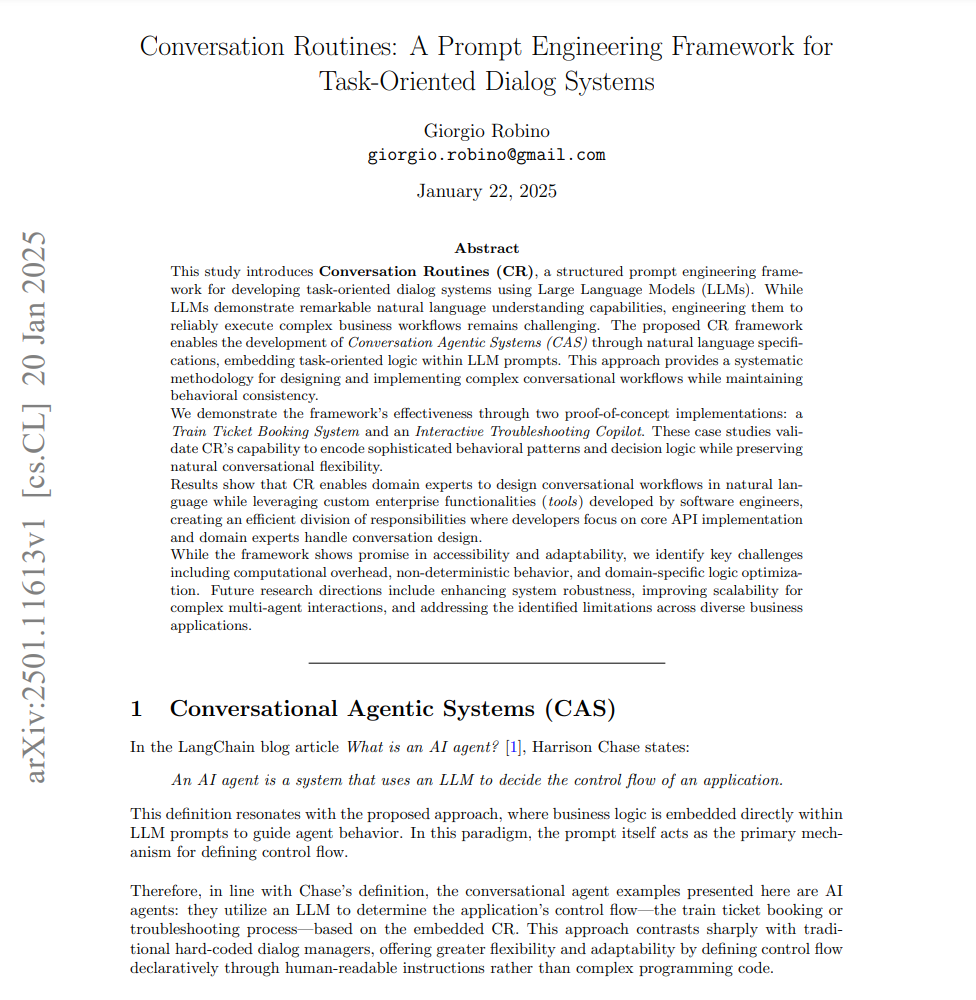

Conversation Routines: A Prompt Engineering Framework for Task-Oriented Dialog Systems
Abstract
This study introduces Conversation Routines (CR), a structured prompt engineering framework for developing task-oriented dialog systems using Large Language Models (LLMs). While LLMs demonstrate remarkable natural language understanding capabilities, engineering them to reliably execute complex business workflows remains challenging.
The proposed CR framework enables the development of Conversation Agentic Systems (CAS) through natural language specifications, embedding task-oriented logic within LLM prompts. This approach provides a systematic methodology for designing and implementing complex conversational workflows while maintaining behavioral consistency. We demonstrate the framework’s effectiveness through two proof-of-concept implementations: a Train Ticket Booking System and an Interactive Troubleshooting Copilot. These case studies validate CR’s capability to encode sophisticated behavioral patterns and decision logic while preserving natural conversational flexibility.
Results show that CR enables domain experts to design conversational workflows in natural language while leveraging custom functions (tools) developed by software engineers, creating an efficient division of responsibilities where developers focus on core API implementation and domain experts handle conversation design.
While the framework shows promise in accessibility and adaptability, we identify key challenges including computational overhead, non-deterministic behavior, and domain-specific logic optimization. Future research directions include CR evaluation methods based on prompt engineering framework driven by goal-oriented grading criteria, improving scalability for complex multi-agent interactions, enhancing system robustness addressing the identified limitations across diverse business applications.
UPDATE (18/02/2025)
The article has been published on arXiv! Compared to the original version, the updated version submitted to arXiv includes som experimental results, refinements and formatting adjustments: https://arxiv.org/abs/2501.11613

Originally published on Medium.